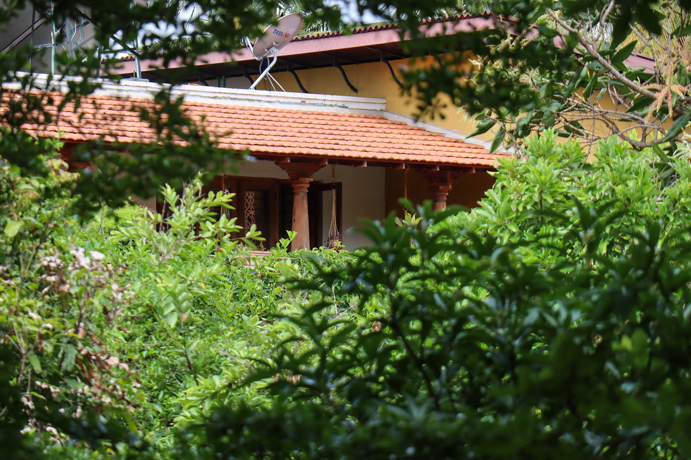
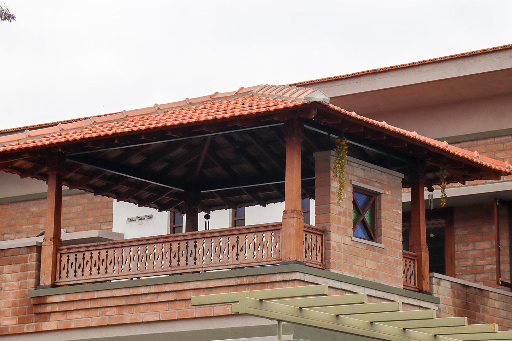
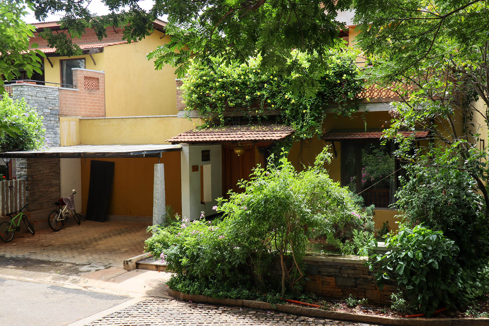
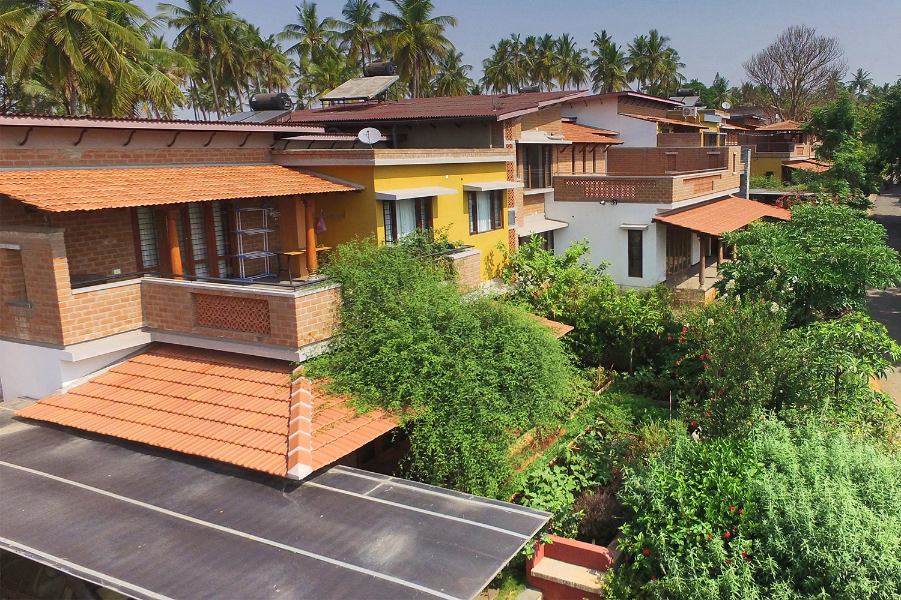

Materials
Materials
This article is a clone from the original GoodEarth Connect catalog. View the original post at:
Benefits of clay roof tiles ↗
Benefits of clay roof tiles
Mangalore roof tiles save energy,
add beauty, last longer
Benefits of clay roof tiles
Mangalore roof tiles save energy,
add beauty, last longer
GoodEarth – October 07, 2022

A roof protects a home from the elements while adding to its aesthetics. A roof thus is an important part of any building. Roofs are made from different materials ranging from wood, concrete, shingles, metal to slate. Also varied construction styles highlight the beauty and significance of roofs alike.
Clay tiles for roofs have stood the test of time. Our own Mangalore tiles as the name suggests is from Mangalore. Mangalore tiles for the roof are etched in our memories and are closely connected with our childhood village homes.
While the clay tiles have predominated the Spanish and Italian architecture scene, it was the German missionary Georg Plebst who set up the first tile factory in Mangalore in 1860 after several experiments with the clay sourced from banks of rivers.
Mangalore tiles are amongst the oldest and most popular tiles used in India. The design and durability of the tiles make it the most-preferred choice. The Mangalore tiles have been loved for centuries for its nostalgic and evocative use in homes and heritage structures, as well as its unique pattern.
Mangalore roof tiles are used in most of the homes and structures at GoodEarth Malhar. There’s a host of reasons why we use them. They appeal to the sense of beauty, are durable, eco-friendly and have excellent thermal insulation qualities. At Malhar each of the communities saves an average energy of approximately 15 tonnes of CO2 emission per year by using Mangalore tile roofing.

Benefits of Mangalore roof tiles
Durable
Mangalore tiles lasts up to 50 years and even longer if maintained well. Mangalore tiles are made of natural materials. Clay tiles can be recycled when no longer useful, thus, making it eco-friendly and the choice for your roof.

Energy efficient
Mangalore tiles keep the interiors of the home cool in summer and warm in winter. It’s energy efficient. They also insulate against sound and help reduce noise pollution.

Environment – friendly
Made of natural materials without any additives or preservatives, the Mangalore clay tiles are environment friendly. This means less waste and fewer greenhouse gases are released into the atmosphere during its manufacturing.
Thus, the clay tiles cut down on the carbon footprint, thereby, contributing towards a better planet. As they are made from natural materials, the clay roof tiles can be recycled.
Mangalore tiles come in two types of grooving, namely the single and double groove. At GoodEarth Malhar we use the double groove tile.

Mangalore roof tiles, thus, should be considered for it saves energy while positively impacting the environment.